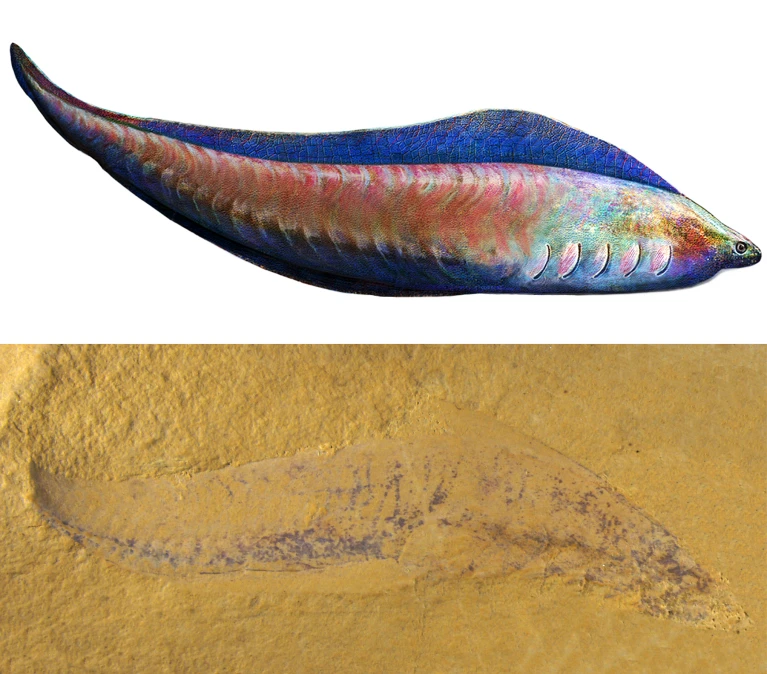
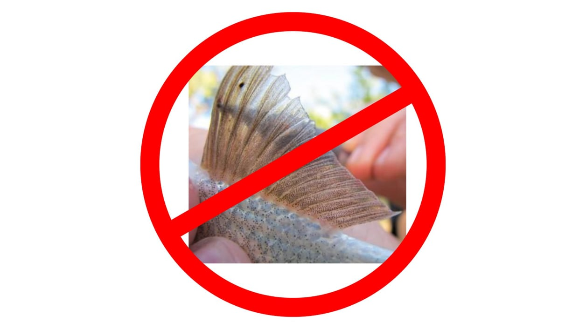
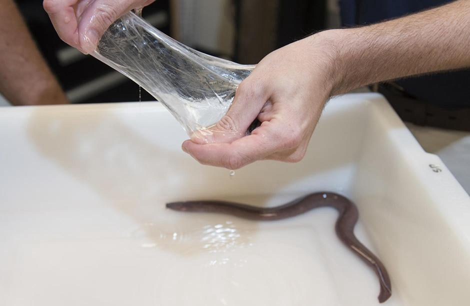

AI Website Maker
Fossil af det første kendte hvirveldyr Myllokunmingia. Ca. 525 mio. år gammel. 3cm langt
For ca. 525 mio. år siden opstår de første dyr med tegn på tidlige udgaver af det, der kendetegner hvirveldyr, nemlig:
- Rygsøjle
- Kranie
- indre skelet
Der er dog ikke tale om knogler, for de er slet ikke udviklet endnu, så strukturerne har kun været lavet af brusk. Brusk kender du fra de seje men bøjelige dele i dine øre og din næseskillevæg. Prøv lige at mærk på dem, så du er med på, hvad vi snakker om:) Du kender også brusk fra fra forskellige stykker kød, det er de hvide hårde stykker, som ikke er knogle, og som kun lige kan tygges.

Kæbeløse hvirveldyr har ikke helt tynde finner
- Ingen kæbe, nulevende har alle runde munde
- brusk skellet
- ingen helt tynde finner (strålefinner)
You can use content blocks to arrange your articles, large texts, instructions. Combine these blocks with media blocks to add illustrations and video tutorials. You can use various content blocks to work with your text. Add quotations, lists, buttons. Select your text to change its formatting or add links. Mobirise is a simple website builder that helps you create amazing web pages without knowing any code.

Image Description
Use Mobirise website building software to create multiple sites for commercial and non-profit projects. Click on the image in this block to replace it. You can add a description below your image, or on the side. If you want to hide some of the text fields, open the Block parameters, and uncheck relevant options.
AI Website Maker